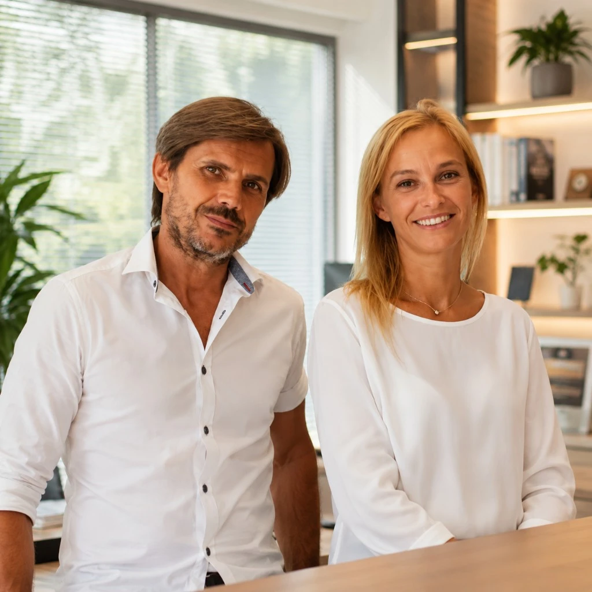
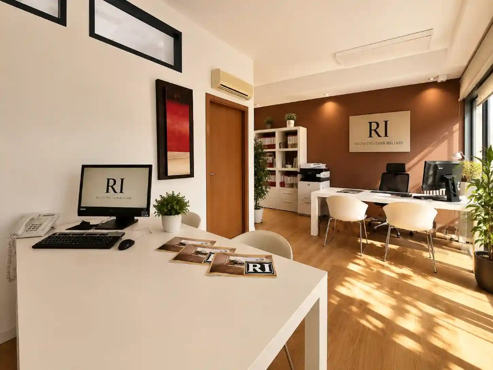

In sintesi
Marco e Sara — nomi di fantasia, storie vere in agenzia — attraversano le quattro tappe tipiche di chi compra a Padova: scroll sui portali, scelta dell’agente, proposta scritta e rogito. Ogni vignetta è seguita da un commento Righetto (con foto del team) su cosa evita truffe, annunci clone e acquisti affrettati. Non sostituisce notaio o commercialista: vi orienta sul percorso sicuro.
Comprare casa non è un click. È una sequenza di decisioni dove l’informazione giusta al momento giusto fa la differenza tra un affare e un errore costoso. I portali immobiliari sono utili per capire cosa esiste e a che fascia si muove il mercato padovano, ma non sostituiscono visite, documenti e mediazione professionale. In questa guida narrativa — quattro vignette fotorealistiche, dialoghi in nuvoletta e note dal campo — vi mostriamo come un percorso accompagnato riduce rischi che online non si vedono: doppioni fotografici, prezzi gonfiati, planimetrie non conformi, proposte senza condizione mutuo.
Righetto opera a Padova, Limena e in 101 comuni dal 2000. Non pubblichiamo percentuali di mediazione online: il compenso si concorda in sede. Ciò che condividiamo qui è metodo — allineato a guida comprare casa Padova, proposta e negoziazione e checklist prima del compromesso.
Fase 1 — Sera sul divano: portali, confronti e primi dubbi
Marco e Sara hanno 32 e 34 anni, lavorano in zona industriale padovana, cercano un trilocale entro il raggio di Limena–Arcella. La sera aprono tre portali: stesso appartamento con foto identiche ma prezzi diversi, un annuncio senza APE, un “affare imperdibile” con urgenza artificiale. È la scena che vediamo ogni settimana: overload informativo senza filtro qualità.
Cosa fare in questa fase (analisi, non previsione): segnate zona, metratura, budget massimo all-in (mutuo + imposte + spese), confrontate con fasce OMI vendita ADE per la microzona — non per “Padova” generico. Diffidate di annunci che chiedono caparra prima della visita o bonifici a privati senza contratto. I portali non verificano ogni inserzione: la responsabilità resta vostra finché non entra un professionista abilitato.

Marco: «Stessa foto, prezzi diversi!»
Sara: «E se fosse una truffa?»

Quando ci chiamate dopo settimane di scroll, la prima cosa che facciamo è depurare: stesso immobile su più portali, incarichi reali vs curiosità, incongruenze prezzo/mq. Non vi facciamo visitare tutto: vi facciamo visitare ciò che ha titolo edilizio regolare e mandato verificabile. Così evitate perdite di tempo e segnali d’allarme (richieste di bonifico anticipato, rifiuto di visita in presenza).
Segnali rossi da portali che meritano una pausa prima del click “contatta”: numero di telefono solo estero, assenza di indirizzo preciso, foto stock ripetute, descrizione copiata identica su decine di annunci. A Padova la domanda su trilocali ben serviti resta sostenuta — si legge su osservatori istituzionali e comparables locali — ma domanda alta attira anche inserzioni improprie. Meglio una lista corta verificata che venti visite a case irrealistiche.
Marco annota tre preferiti; Sara salva screenshot dei prezzi. Già qui conviene allinearsi: budget netto, mutuo massimo, tempistica (scadenza affitto, nascita figlio, cambio lavoro). Senza allineamento di coppia, la fase 2 diventa conflitto in agenzia. Noi lo vediamo: un partner vuole Arcella, l’altro solo Limena — meglio risolverlo sul divano che davanti all’agente.
Fase 2 — In agenzia: appuntamento, domande e filtro professionale
Dopo due settimane decidono: «Basta caos online, parliamo con qualcuno del territorio». Prenotano consulenza in agenzia a Limena. Portano lista zone, budget indicativo, preferenza seconda mano ristrutturata. L’agente Righetto non vende “sogni”: chiede documenti reddituali indicativi per orientare fascia mutuo (senza sostituire la banca), spiega differenza tra annuncio portal e incarico esclusivo, propone calendario visite raggruppate per zona.
Perché l’appuntamento cambia tutto: in sede verificate identità dell’agenzia (P.IVA, iscrizione CCIAA, recensioni verificabili), chiarite aspettative su tempi medi di trattativa a Padova, ricevete spiegazione su visura catastale e APE prima di entrare in casa altrui. È la fase anti-truffa per eccellenza: niente versamenti in contanti al “proprietario” incontrato solo in chat.
Agente: «Visite solo su incarichi verificati.»
Sara: «Budget e zone, senza impegno.»

In sede non vi chiediamo di firmare nulla al primo caffè. Vi spieghiamo come lavoriamo: mandato del venditore, scheda immobile, privacy visita, canale unico per proposte. Mediazione: compenso da concordare in sede, mai listini web. Chi cerca casa seria esce con tre nomi concreti da visitare entro pochi giorni — non con un PDF generico di “Padova centro”.
Domande utili da portare all’appuntamento: quante visite servono in media per chiudere in zona X; quali documenti chiediamo al venditore prima della proposta; come gestiamo conflitto tra più offerenti; cosa succede se il mutuo viene negato. Risposte chiare = meno sorprese. Per approfondire il ruolo dell’agente: scegliere agenzia a Padova.
Marco e Sara escono con appuntamento sabato mattina — Arcella e Ponte di Brenta — e checklist stampata (luce, spese, conformità). Sara commenta: «Finalmente qualcuno che ordina il caos». Marco aggiunge: «Online sembrava facile». È il punto in cui molti acquirenti capiscono che il professionista non è un costo accessorio ma un filtro di rischio.
Fase 3 — Proposta scritta: quando il cuore dice sì (con clausole)
Dopo quattro visite, il trilocale con balcone verso cortile interno convince entrambi. Prezzo in linea con comparabili recenti — non numeri inventati: discussione basata su OMI e vendite simili documentate in agenzia. Si prepara proposta d’acquisto scritta: importo, termine accettazione, caparra confirmatoria art. 1385 c.c., condizione sospensiva mutuo, data rogito indicativa.
Qui si evita l’acquisto incauto: niente accordi solo verbalmente; niente “saldiamo in contanti per risparmiare tasse” (schema illegale); niente rinuncia alle verifiche per “non perdere l’affare”. La proposta ben scritta protegge entrambe le parti fino al compromesso/notaio. Dettaglio normativo: caparra confirmatoria Padova.
Marco: «Condizione mutuo, per favore!»
Venditore: «Accettata!»
Coordiniamo la proposta in modo che non restino zone grigie: chi paga cosa, entro quando rispondono, cosa succede se la banca dice no. Non siamo notai né avvocati, ma sappiamo quando fermare una trattativa se mancano visure o se il venditore rifiuta clausole minime di tutela. Acquisto incauto spesso nasce qui — firma affrettata senza condizioni.
Marco e Sara attendono 48 ore: proposta accettata con piccola controproposta su data rogito. Emozione e ansia: normali. Il lavoro successivo è burocratico e merita la stessa attenzione del “sì” emotivo: perizia banca, documenti venditore, eventuale compromesso registrato. Link utili: mutuo prima casa Padova, documenti fino al rogito.
Fase 4 — Rogito e nuova casa: chiavi, registro, respiro
Mesi dopo — slittamenti da perizia e agenzia entrate incluse — il rogito in notaia. Marco e Sara rileggono atti, versano saldo prezzo tramite conti tracciati, registrano contratto. L’agente Righetto resta ponte fino alla consegna chiavi: lettura contatori, stato consegna, promemoria voltura utenze. Non sparisce al rogito.
Esito buono non significa solo “abbiamo firmato”: significa immobile coerente con quanto visto, assenza di gravami a sorpresa, spese condominiali note, APE consegnato. Truffe tardive esistono (doppie vendite rare ma gravi, vizi occulti non dichiarati): per questo la filiera documentale precedente non è burocrazia ornamentale.
Marco: «Finalmente!»
Sara: «Chiavi in mano — casa nostra.»
Il momento delle chiavi è quello che resta nelle recensioni (4,9/5 su 127 feedback verificabili). Per arrivarci senza incubi servono le fasi 1–3 fatte bene: niente scorciatoie, niente fiducia cieca in un annuncio. Restiamo disponibili anche dopo il rogito per orientarvi su registro contratti se affittate, o su gestione spese casa.
Marco e Sara brindano sul balcone — cortile silenzioso, come in visita. Sara dice: «Se avessimo comprato dal primo annuncio fake, oggi…». Marco completa: «…saremmo in tribunale o senza mutuo». Esagerazione comica, ma il sentimento è reale: accompagnamento non è lusso, è assicurazione sul processo.
Truffe e acquisti incauti: dove intervenire
| Rischio | Fase critica | Cosa fa Righetto |
|---|---|---|
| Annunci clone / prezzo esca | Portali | Confronto incarichi, segnalazione incongruenze |
| Richiesta bonifico anticipato | Chat pre-visita | Stop: niente pagamenti fuori contratto |
| Proposta senza mutuo condizionato | Proposta | Clausole sospensive standard |
| Documenti mancanti a rogito | Pre-rogito | Checklist con notaio e venditore |
Non elenchiamo cifre di mercato non verificate: per valutazioni usate OMI ADE e sopralluogo. Per normativa mutuo e imposte consultate banca e commercialista. Noi restiamo il filo operativo tra annuncio e rogito — catalogo immobili, consulenza gratuita, tel. 049.8843484.
Prossimo passo
Il quesito: Siete nella fase 1 come Marco e Sara?
- Consulenza — Appuntamento senza impegno (landing consulenza)
- Annunci verificati — immobili in vendita e affitto
- Guide — comprare casa Padova
Domande frequenti
Ultimo aggiornamento: 6 ottobre 2026. Personaggi e dialoghi narrativi; procedura allineata a prassi immobiliare padovana. Nessun dato OMI numerico in questo articolo.

Gruppo Immobiliare Righetto — Limena e Padova dal 2000.